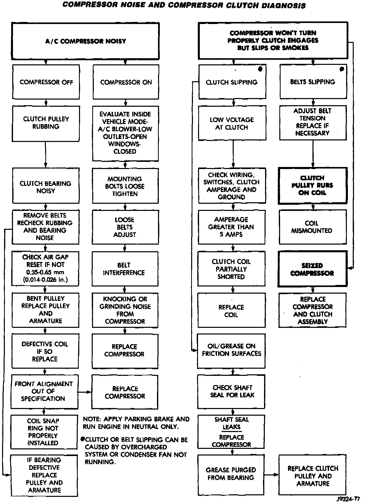

Compressor HVAC: Testing and Inspection
Compressor Noise And Compressor Clutch Diagnosis:

Noises that develop during air conditioning operation can often be misleading. For example: What sounds like a failed front bearing or connecting rod, may be caused by loose bolts, nuts, mounting brackets, or a loose clutch assembly Verify serpentine drive belt tension. Improper belt tension can cause a misleading noise when the compressor is engaged. The noise may not occur when the compressor is disengaged.
Drive belts are speed sensitive. At different engine speeds and depending upon belt tension, belts can develop noises that are mistaken for a compressor noise.
1. Select a quiet area for testing. Duplicate the complaint conditions as much as possible. Switch the compressor on and off several times to clearly identify the compressor noise. Listen to the compressor clutch while engaged and disengaged.
2. To duplicate a high-ambient temperature condition (high head pressure), restrict the air flow through the condenser. Install a manifold gauge set to make sure that the discharge pressure does not exceed 2070 kPa (300 psi).
3. Tighten all compressor mounting bolts, the clutch mounting nut, the clutch coil mounting screw or nut, and the serpentine drive belt to the correct specifications.
4. Check the refrigerant system plumbing for rubbing or interference, which can cause unusual noises.
5. Check the refrigerant system charge.
Refrigerant System Charge
6. Check the compressor noise as in Step 1.
7. If the noise still exists, loosen the compressor mounting bolts and tighten again. Repeat Step 1.
8. If the noise continues, replace the compressor and repeat Step 1.